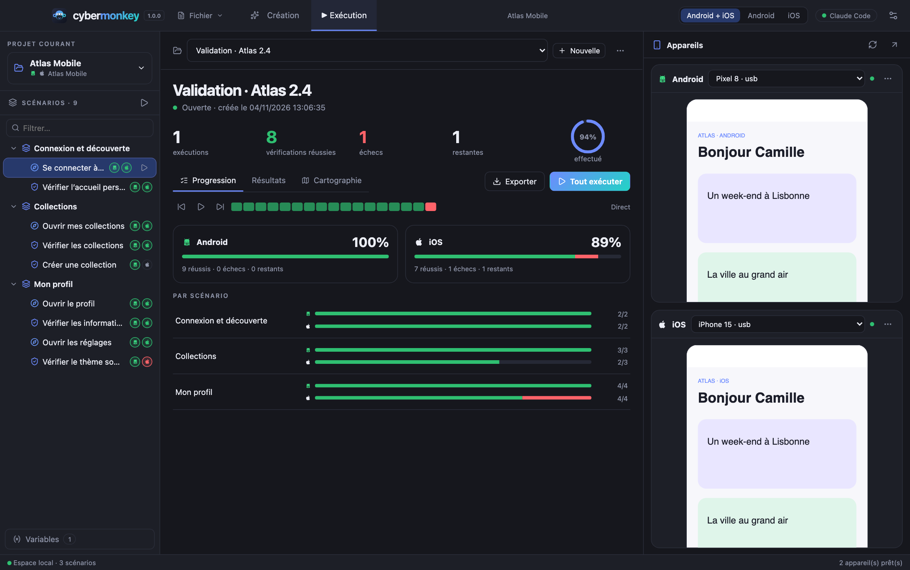

Atelier QA mobile · open sourceMobile QA workspace · open source
Vos tests mobiles.
Les preuves en plus.Your mobile tests.
With proof built in.
Créez, enregistrez et rejouez vos scénarios Android et iOS. L’IA explore vos appareils, répare les sélecteurs cassés et analyse les échecs ; chaque étape garde sa capture.Create, record and replay your Android and iOS scenarios. The AI explores your devices, repairs broken selectors and analyses failures; every step keeps its screenshot.

Un parcours. Deux plateformes. Une preuve à chaque étape.One journey. Two platforms. Evidence at every step.
Cybermonkey réunit l’arbre de scénarios, les appareils et les résultats dans un seul espace de travail redimensionnable.Cybermonkey brings the scenario tree, devices and results into one resizable workspace.
Créer avec l’IACreate with AI
Décrivez un parcours : l’IA explore vos appareils réels (Claude Code, Codex ou Copilot), puis propose un scénario validé par rejeu. Mode interactif ou automatique, variables créées à la volée.Describe a journey: the AI explores your real devices (Claude Code, Codex or Copilot), then proposes a scenario checked by replay. Interactive or auto mode, variables created on the fly.
Enregistrer sur le téléphoneRecord on the phone
Naviguez dans l’application comme un utilisateur : chaque écran stabilisé devient une étape, les appuis ambigus sont tranchés par l’IA.Use the app like a user: every settled screen becomes a step, ambiguous taps are settled by the AI.
Importer vos cas de testImport your test cases
Squash TM, TestRail, Azure Test Plans, Gherkin, CSV, JSON, Markdown : l’IA automatise les cas importés, ou vous les importez en squelettes à relier.Squash TM, TestRail, Azure Test Plans, Gherkin, CSV, JSON, Markdown: the AI automates imported cases, or import them as skeletons to bind.
Plus rapide qu’un humainFaster than a human
Changement d’écran détecté par de petites requêtes, pas d’attente fixe, preuves paramétrables : une vérification se joue en 0,2 s.Screen changes detected with tiny queries, no fixed waits, configurable evidence: a check runs in 0.2 s.
Résilient aux changementsResilient to change
Sélecteurs de secours, réparation par l’IA des actions dont le composant a disparu (jamais des vérifications), analyse structurée des échecs.Fallback selectors, AI repair of actions whose component vanished (never of checks), structured failure analysis.
Résiste aux imprévusSurvives the unexpected
Popup, session expirée, plantage, permission système : l’app est relancée, les dialogues répondus, vos gestionnaires reconnaissent l’écran, se reconnectent et reviennent là où le test en était.Popup, expired session, crash, system permission: the app is relaunched, dialogs answered, your handlers recognise the screen, log in again and go back to where the test was.
Distingue un bug d’un test fragileTells a bug from a fragile test
Relance ciblée, pas « instable », historique « passé 8 fois sur 10 », audit des sélecteurs avec l’identifiant à demander aux développeurs.Targeted retry, “unstable” steps, “passed 8 times out of 10” history, selector audit with the identifier to ask developers for.
Comprend l’échecUnderstands the failure
Vidéo de l’échec, journal de l’appareil, signes de problème réseau et comparaison visuelle avec la dernière réussite.Failure video, device log, network-trouble signs and visual comparison with the last pass.
EnvironnementsEnvironments
Recette, préprod… chaque environnement a ses variables ; un sélecteur change tout le projet : création, exécution et MCP.Staging, pre-prod… each environment has its own variables; one selector switches the whole project: creation, runs and MCP.
Branché sur votre CI/CDPlugs into your CI/CD
Une commande, sans fenêtre : installe le build, joue la campagne, écrit le JUnit. Le code de sortie distingue une app cassée d’une machine cassée.One command, no window: installs the build, plays the campaign, writes the JUnit. The exit code tells a broken app from a broken machine.
Un OS à la fois, ou les deuxOne OS at a time, or both
Un sélecteur Android + iOS / Android / iOS dans la barre du haut. Une étape propre à un OS est « non applicable » ailleurs, jamais en échec.An Android + iOS / Android / iOS switch in the top bar. A step specific to one OS is “not applicable” elsewhere, never failed.
En imagesIn pictures
Captures de l’application avec des données de démonstration (application fictive Atlas Mobile).Screenshots of the app with demonstration data (fictional app Atlas Mobile).

Un scénario partagé : l’intention (nom, description) et une variante par OS. Créez à la main, avec l’IA, en enregistrant ou en important.One shared scenario: the intent (name, description) and one variant per OS. Create by hand, with AI, by recording or by importing.
L’IA propose, vous décidez : synthèse, couverture par OS, résultat du rejeu et corrections automatiques. Rien n’est enregistré avant votre validation.The AI proposes, you decide: synthesis, per-OS coverage, replay result and automatic fixes. Nothing is saved before you accept.
Avancement en éléments selon le dernier résultat de chacun, par OS du projet ; la liste des résultats est reliée à l’arbre des scénarios.Progress in elements by the last result of each, per OS of the project; the results list is linked to the scenario tree.
La liste des écrans par module : leur nom, s’ils réussissent d’après les tests liés, et une capture.The list of screens by module: their name, whether they pass according to their linked tests, and a capture.
Chaque appareil dit précisément ce qui manque et comment le corriger, avec la commande à copier et un diagnostic par l’IA.Each device says exactly what is missing and how to fix it, with a command to copy and an AI diagnosis.
Du premier test au rapportFrom first test to report
Branchez, c’est détectéPlug in, it is detected
Les appareils USB, émulateurs et simulateurs sont détectés et associés automatiquement. L’application à tester se lit sur l’appareil ou se choisit dans la liste des apps installées.USB devices, emulators and simulators are detected and paired automatically. The app under test is read from the device or picked from the installed apps.
Créez un scénarioCreate a scenario
Avec l’IA, en enregistrant sur le téléphone, en important des cas, ou à la main en cliquant les composants du miroir.With the AI, by recording on the phone, by importing cases, or by hand by clicking components on the mirror.
Validez la synthèseReview the synthesis
Cochez les étapes à garder, renommez, lisez les corrections automatiques et le résultat du rejeu sur chaque OS.Tick the steps to keep, rename, read the automatic fixes and the replay result on each OS.
Lancez une campagneRun a campaign
Android, iOS ou les deux en parallèle. Captures, durée et message de chaque étape ; réparation de sélecteurs et analyse des échecs par l’IA.Android, iOS or both in parallel. Captures, duration and message for each step; AI selector repair and failure analysis.
Partagez le résultatShare the result
Texte, CSV, Markdown, Confluence, HTML, JUnit XML pour la CI, ou JSON.Text, CSV, Markdown, Confluence, HTML, JUnit XML for CI, or JSON.
Télécharger CybermonkeyDownload Cybermonkey 1.4.0
macOS (Apple Silicon) : ouvrez le DMG et glissez Cybermonkey dans Applications. Windows (x64) : lancez l’installateur. Les mises à jour suivantes sont proposées dans l’application.macOS (Apple Silicon): open the DMG and drag Cybermonkey into Applications. Windows (x64): run the installer. Later updates are offered inside the app.
macOS : signature locale (ad hoc), sans notarisation Apple : au premier lancement, autorisez l’app dans Réglages Système → Confidentialité et sécurité → « Ouvrir quand même ». Windows : l’installateur n’est pas signé : SmartScreen affiche « Windows a protégé votre ordinateur » → Informations complémentaires → Exécuter quand même.macOS: locally signed (ad hoc), not notarized by Apple: on first launch, allow the app in System Settings → Privacy & Security → “Open Anyway”. Windows: the installer is not code-signed: SmartScreen shows “Windows protected your PC” → More info → Run anyway.
Sous Windows, seul Android est piloté : les simulateurs iOS et la compilation de WebDriverAgent exigent un Mac avec Xcode.On Windows only Android is driven: iOS simulators and building WebDriverAgent require a Mac with Xcode.
FAQ
Faut-il un compte Cybermonkey ?Do I need a Cybermonkey account?
Non. L’IA utilise votre propre abonnement Claude Code, Codex ou GitHub Copilot, connecté depuis Paramètres → IA.No. The AI uses your own Claude Code, Codex or GitHub Copilot subscription, signed in from Settings → AI.
Où sont mes données ?Where is my data?
Sur votre machine : projets, variables, captures et rapports. Seul le contexte utile (écrans, demande) est envoyé au fournisseur d’IA choisi. Les variables ne sont pas un coffre-fort chiffré.On your machine: projects, variables, captures and reports. Only the useful context (screens, request) is sent to the chosen AI provider. Variables are not an encrypted vault.
Que faire si la page à tester est une vue web ?What if the screen under test is a web view?
Quand son contenu n’est pas lisible par l’accessibilité, l’IA reçoit la capture avec une grille et désigne les champs par cellule ; la position est stockée en pourcentage de l’écran. Voir « Fonctionnement ».When its content is not readable by accessibility, the AI gets the screenshot with a grid and designates fields by cell; the position is stored as a percentage of the screen. See “How it works”.